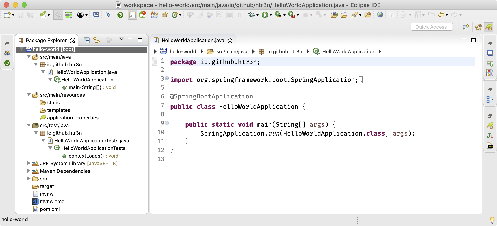

I started using Spring framework few years back in 2009 to develop demo systems for some EU projects. These projects featured a number of Web services some of which share back-end databases and some other talk to external services or WS-BPEL business processes.
The dependency injection implemented in Spring works so well and on top of that, many other parts like Spring MVC, data access, transactions messaging and even some third-party libraries such as Apache ActiveMQ, Apache CXF and JBoss (now Red Hat and likely IBM) Hibernate ORM, and many other helper libraries all came to play nicely.
One of my concerns is that configuring a complex Spring based project is truly tedious and error-prone. I have made countless trial-and errors and gone through lots of warning and errors, not to mention XML verbosity and complexity, Maven dependency hell, the conflicts or incompatibilities among numerous dependencies. Fast forward to 2018 I want to refresh my experience through existing Spring projects. I was thinking about similar rough paths when upgrading Spring and Hibernate to some prior versions until discovering Spring Boot.
To be precise, Spring Boot is not a magic wand that would help us to navigate through the forest of Spring framework complexity or automatically resolve certain problems. It is more or less some sort of convention over configuration that might reduce significant effort on making Spring applications quickly up and running as well as ensure better compatibilities among integrated libraries.
A Quick Start
Let’s consider the following Java code defining a REST controller for an endpoint “/” that shall display a greeting.
@RestController
class HelloWorld {
@RequestMapping("/")
public String hello(){
return "Hello World!";
}
}
Just with this very minimal code, we can have a working Spring application. Assume that the Spring Boot CLI is available, start our application with the following command.
spring run HelloWorld.java
Spring Boot will launch an embedded Tomcat server and initialise a Web application to serve the endpoint at “http://localhost:8080”. Visiting this address will give us “Hello World!”. What could be cooler than that !?
Now, let’s start a quick tour on some more appealing features that Spring Boot 2.1.0 offers.
Project Bootstrapping
Using Spring Initializr directly or via IDE /CLI, we can quickly bootstrap a dead simple or full-blown Spring development project. For instance, this command will create a Spring application development project, namely, hello-world, with JPA and H2 database.
spring init --dependencies=web,data-jpa,h2 hello-world
After asking some questions such as the project’s and package’s names, the command line will download the core package and create a new development project that is ready to be imported to any IDE. Other than that, Eclipse or IntelliJ IDEA can just walk you through simple wizards in which you can craft your own project and choose the necessary components for the new project.

Build and Dependency Management
Spring Boot 2 works with Spring Framework 5 and requires at least Java 8. You can either choose Maven or Gradle build system when creating the project. An excerpt of Maven pom.xml (stripped off few minor details) of our project is shown below.
<project>
<modelVersion>4.0.0</modelVersion>
<groupId>io.github.htr3n</groupId>
<artifactId>hello-world</artifactId>
<version>0.0.1-SNAPSHOT</version>
<packaging>jar</packaging>
<name>hello-world</name>
<description>Demo project for Spring Boot</description>
<parent>
<groupId>org.springframework.boot</groupId>
<artifactId>spring-boot-starter-parent</artifactId>
<version>2.1.0.RELEASE</version>
<relativePath/> <!-- lookup parent from repository -->
</parent>
<properties>
<project.build.sourceEncoding>UTF-8</project.build.sourceEncoding>
<project.reporting.outputEncoding>UTF-8</project.reporting.outputEncoding>
<java.version>1.8</java.version>
</properties>
<dependencies>
<dependency>
<groupId>org.springframework.boot</groupId>
<artifactId>spring-boot-starter-data-jpa</artifactId>
</dependency>
<dependency>
<groupId>org.springframework.boot</groupId>
<artifactId>spring-boot-starter-web</artifactId>
</dependency>
<dependency>
<groupId>com.h2database</groupId>
<artifactId>h2</artifactId>
<scope>runtime</scope>
</dependency>
<dependency>
<groupId>org.springframework.boot</groupId>
<artifactId>spring-boot-starter-test</artifactId>
<scope>test</scope>
</dependency>
</dependencies>
<build>
<plugins>
<plugin>
<groupId>org.springframework.boot</groupId>
<artifactId>spring-boot-maven-plugin</artifactId>
</plugin>
</plugins>
</build>
</project>
pom.xmlThis POM inherits many useful default settings and values from spring-boot-starter-parent. We might opt to not use spring-boot-starter-parent and go old-school to set everything up on our own. I have just recalled working with Spring 3 and trying to integrate an embedded Jetty server. I really struggled with different Jetty versions as well as other libraries to make them click. When I tried to upgrade the legacy projects to newer Spring and Hibernate versions, things all turned out really messy with loads of mysterious errors.
Spring Boot eases this kind of burden with some opinionated design and configuration decisions. We can truly leverage its strength and choose among a set of starters (beginning with spring-boot-starter-). The starters are intended for better compatiblity and smooth integration.
In the hello-world project, we have chosen three components spring-boot-starter-data-jpa (JPA), spring-boot-starter-web (Web), spring-boot-starter-test (for testing) along with mysql-connector-java (MySQL).
Autoconfiguration
Intelligent autoconfiguration is perhaps one of the most prominent and important parts of Spring Boot. There are different levels of configuring a Spring based application. The simplest form of autoconfiguration is the “Hello World” example mentioned above. The new Maven based project created via the wizard or command line consists of pom.xml along with application.properties, HelloWorldApplication.java and HelloWorldApplicationTest.java as shown in Figure 1.
package io.github.htr3n;
import org.springframework.boot.SpringApplication;
import org.springframework.boot.autoconfigure.SpringBootApplication;
@SpringBootApplication
public class HelloWorldApplication {
public static void main(String[] args) {
SpringApplication.run(HelloWorldApplication.class, args);
}
}
The HelloWorldApplication class is annotated with @SpringBootApplication which is actually an umbrella for three annotations:
@EnableAutoConfigurationthat triggers auto-configuration of Spring application context.@ComponentScanthat enables the scanning of classes annotated with@Componentor its sub-types on the package where the application is located (that’s why it is often recommended to place the class annotated with@SpringBootApplicationat the root package above other classes)@SpringBootConfigurationis an alias to@Configurationallows for registering some more beans in the context or import additional configuration classes
The aforementioned annotations are sufficient to launch not-so-complex Spring applications. In case one wants to fine-tune the application context autoloading, individual annocations mentioned above and/or customised annotations can be leveraged.
Examining the Spring Boot auto-configure project on Github, we can see many scripts for essential libraries. Depending on what are detected on the classpath and the application-specific configuration directives, Spring Boot will automatically include and configure the corresponding components.
We can explicitly disable certain parts using @EnableAutoConfiguration(exclude={class1, class2, ...}) or the directive “spring.autoconfigure.exclude=class1, class2, ...” in application.properties.
App Launcher Configuration
The SpringApplication class is the main launcher of a Spring application. Prior to Spring Boot, in order to start a Spring app we have to manually initialise an ApplicationContext, parse system- and application-specific properties and input arguments (if needed), load all necessary beans and/or launch an embedded Web server like Tomcat or Jetty. Now, all of these tasks will be automatically done using SpringApplication with @SpringBootApplication (or a combination of its sub-annotations).
Apart from application.properties (or .yml), we can configure and customise a Spring app using a SpringApplication or SpringApplicationBuilder instance. For instance, the following code will turn off the banner when launching our Spring app
public static void main(String[] args) {
SpringApplication app = new SpringApplication(HelloWorldApplication.class);
app.setBannerMode(Banner.Mode.OFF);
app.run(args);
}
which is equivalent to spring.main.banner-mode=off in application.properties. Spring Boot comes with numerous predefined properties. Indeed, almost every autoconfigured component offers some default property settings. These predefined settings will be overriden with our own settings, if exist.
Properties Loading
By default, Spring Boot will bind external properties from application.properties (or .yml) at runtime. That is called externalized configuration. More details on application properties can be found here.
Warning
Please beware of the trailing whitespaces in Spring.propertiesas Spring Boot won’t trim off any of them and in some cases that might lead to unexpected issues or even crash the applications (see my other relevant post)
Besides the default application.properties, Spring allows us to activate various profiles using the naming convention application-{profile}.properties. It comes very handy in case we look forward to separating testing-specific environments, for example, using application-test.properties, from production environments. We can still ask to load property sources with @PropertySource as usual in Spring.
Components and Beans Configuration
Other components and bean configurations can be loaded from different sources including XML files, Java classes (with @Configuration), or Groovy (also annotated with @Configuration as Java or via Groovy Beans DSL “beans {...}”).
Note that, all components in the sub-paths under the main class annotated with @SpringBootApplication will be automatically scanned and initialised. The rest of beans configuration will be handed over to Spring’s dependency injection mechanism.
Web Configuration
Spring Boot often tries to establish an appropriate ApplicationContext based on classpath scanning and app-specific configurations. For instance, to enable the traditional Spring Web MVC, I simply include the component spring-boot-starter-web in the POM as shown in the previous section. Spring Boot will automatically adds relevant components for resolving and serving Web pages and resources.
We can add extra components such as WebFlux—the reactive framework added in Spring 5+ (spring-boot-starter-webflux), Thymeleaf template engine (spring-boot-starter-thymeleaf), Spring Web services (spring-boot-starter-web-services) and WebSocket (spring-boot-starter-websocket).
Spring Web MVC is totally capable to handle most of HTTP requests via servlets or controllers like the simple Hello World example above. Should you need more advanced control of RESTful endpoints, just add either one of Spring HATEOAS (spring-boot-starter-hateoas), Jersey (spring-boot-starter-jersey) or Apache CXF.
By default, the Web starter will use Tomcat as the underlying embedded application server. When we opt for another server, we must explicitly exclude Tomcat and add either spring-boot-starter-jetty (Jetty) or spring-boot-starter-undertow (Undertow) in our POM.
<dependency>
<groupId>org.springframework.boot</groupId>
<artifactId>spring-boot-starter-web</artifactId>
<exclusions>
<exclusion>
<groupId>org.springframework.boot</groupId>
<artifactId>spring-boot-starter-tomcat</artifactId>
</exclusion>
</exclusions>
</dependency>
<dependency>
<groupId>org.springframework.boot</groupId>
<artifactId>spring-boot-starter-jetty</artifactId>
</dependency>
Many of the embedded server’s settings can be defined in application.properties such as the network address, port, sessions, and so on. These settings can also be done programmatically by defining bean implementing WebServerFactoryCustomizer that enables access to customise the underlying WebServerFactory. For instance, you can refer to more fine-tuned customisations for Jetty, Tomcat, or Undertow.
Following up our example on excluding Tomcat and adding Jetty, we can create a simple bean to change the Jetty server from the default port 8080 to 9999.
package io.github.htr3n;
import org.springframework.boot.web.server.ConfigurableWebServerFactory;
import org.springframework.boot.web.server.WebServerFactoryCustomizer;
import org.springframework.stereotype.Component;
@Component
public class JettyServerCustomizer implements WebServerFactoryCustomizer<ConfigurableWebServerFactory> {
@Override
public void customize(ConfigurableWebServerFactory factory) {
factory.setPort(9999);
}
}
Data Access Configuration
Going through various versions, Spring framework always provides considerable support and different abstraction levels for database access. In general, it often requires some configurations for data sources and sometimes the intermediate layers such as pooling or caching.
Spring Boot has taken further steps forward by auto-configuring in some popular circumstances, for instance, embedded databases, database pooling, to name but a few. What we need to do is to add appropriate dependencies. In the hello-world project, H2 database engine will be auto-configured by Spring Boot.
<dependencies>
...
<dependency>
<groupId>com.h2database</groupId>
<artifactId>h2</artifactId>
<scope>runtime</scope>
</dependency>
...
</dependencies>
Note that, including database dependencies alone won’t trigger any auto-configuration. It’s only when Spring Boot found some sort of data access components such as spring-boot-starter-jdbc, spring-boot-starter-data-jpa (which transitively embraces spring-jdbc) on the classpath.
Atop the data connection layer, Spring Boot takes the liberty of choosing other data access components. Note that the design decisions taken by Spring Boot are often based on some popular and widely-used conventions in Spring based application developments. The decisions for data access, like other components, can be overriden with our own information. For example, I can define my own H2 data source in application.properties.
spring.datasource.url=jdbc:h2:mem:helloword_db;DB_CLOSE_ON_EXIT=FALSE
spring.datasource.driverClassName=org.h2.Driver
spring.datasource.username=sa
spring.datasource.password=sa
Next, Spring Boot will try to initialise the database. High level data access components such as Spring Data JPA, Hibernate can be customised via specific properties. Nonetheless, Spring Boot can look into the classpath for a schema definition script, namely, schema.sql, and a data manipulation script, namely, data.sql and execute them if found. Here is an example of these scripts for a simple database customer.
-- schema.sql
DROP TABLE customer;
CREATE TABLE customer(
id integer not null auto_increment,
name varchar(255) not null,
email varchar (255) not null,
primary key (id)
);
-- data.sql
INSERT INTO customer(name, email) VALUES ('Bob', 'bob@test.com');
Instead, you may indicate the initialising scripts for specific databases using the naming convention schema-${platform}.sql and data-${platform}.sql where platform is taken from spring.datasource.platform. This convention helps us to separate vendor-specific data creation and manipulation scripts.
Last but not least, Spring Boot classpath scanning mechanism may help us to entirely skip JPA’s persistence.xml as it will try to search for all classes annotated with @Entity, @Embeddable, or @MappedSuperclass in our application’s classpath.
Development Support
Testing
Testing is always a crucial part of any development process and Spring apps are no exception. That’s why Spring Boot provides spring-boot-starter-test that comprises several handy components such as JUnit, Spring Tests, Mockito, to name but a few.
import org.junit.Test;
import org.junit.runner.RunWith;
import org.springframework.boot.test.context.SpringBootTest;
import org.springframework.test.context.junit4.SpringRunner;
@RunWith(SpringRunner.class)
@SpringBootTest
public class ` {
@Test
public void contextLoads() {
}
}
Consider inside the project hello-world, we have a simple class HelloWorldApplicationTests annotated with @SpringBootTest that detects and initialises Spring Boot’s application context and testing environment. We can fine tune the testing environment in a similar manner as production’s (i.e. with @Configuration, @ContextConfiguration along with @TestConfiguration).
We won’t delve into evey detail of testing support but you can find an extensive list of test auto-configurations for JDBC, JPA, Neo, Redis, REST, Web MVC, and WebFlux as well as a rich documentation of Spring Boot testing features here.
In one of my previous posts, we can see that the annotation @JdbcTest has simplified a lot of settings needed for loading up databases, testing CRUD app with automatic transactions. As such it truly helps me better focus on the actual testing logics.
Troubleshooting
In order to dig deeper or to resolve bugs for our Spring apps, we may need more detailed information on logs and traces. Just start the Spring application under analysis with the command line option”--debug”, system property “-Ddebug”, or set “debug=true” in application.properties. Here is an example of enabling debugging using command line.
mvn spring-boot:run --debug
The “--debug” option will enable the DEBUG logging level for some selected core Spring components. Likewise, we can also enable TRACE logging level with the “--trace" or “trace=true” in application.properties.
Developer Tools
Spring Boot equips us—Spring app developers—with a set of nice tools in hope that our life might become less miserable, or so they said ;)
<dependencies>
...
<dependency>
<groupId>org.springframework.boot</groupId>
<artifactId>spring-boot-devtools</artifactId>
<optional>true</optional>
</dependency>
...
</dependencies>
One of my favourie features provided by spring-boot-devtools is automatic restart. That is, a Spring app can automatically reload whenever any changes on the classpath are detected. As stated in the documentation, it works really well with LiveReload to instantly refresh the corresponding Web browsers. The automatic restart feature mimics JRebel but in a slower and less advanced manner using two classloaders: a base classloader for unchanged resources and a restart classloader for changable ones.
Finale
Most of the decisions taken in Spring Boot are opinionated and some might like or dislike, especially hard-core experienced developers who know deeply about Spring.
Fairly speaking, the way Spring Boot hides the underneath complexity turns out rather ideal for beginners. An inexperienced developer can start the journey with minimal effort and configuration to have a running application. After that, more and more advanced configurations or features can be gradually added or customised until we no longer rely on Spring Boot. Instead of struggling with complex settings, Spring app developers can now better concentrate on the core system business logics to be designed and implemented.
Having said that, a Spring lover like me would truly appreciate the ideas and massive efforts behind the Spring Boot project to achieve an integrated set of various in-house and third-party libraries working smoothly. I think Spring development teams have made some bold and good decisions. With simple starting points and open to a plethora of advanced features, configurations and customisations, even experienced teams and developers would greatly benefit from that with more focused system designs and better speed of development.